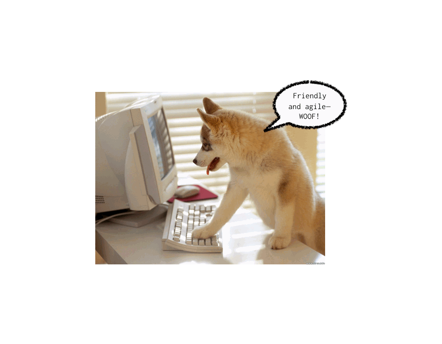
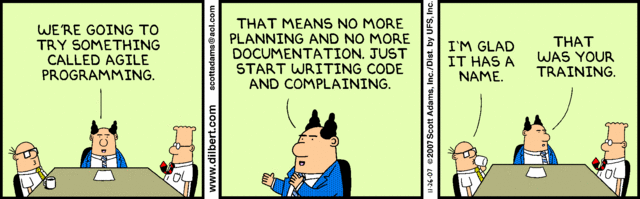

Developer-friendly Gem Development
http://sn.im/gemdev
Mani Tadayon

- @bwsr_sr
- github: bowsersenior
Gems are good
- modular
- fully-specified dependencies
- focused tests
- concise documentation
Gems should be friendly
- clear documentation with examples
- no hidden gotchas
- logical names for files, modules, etc.

Gems should be agile
- fast on-boarding (dependencies)
- no-fuss extensibility (organization)
- verifiable (testing)

Creating a gem from scratch
bundle gem- Enhance Bundler's barebones templates
- Add Cucumber & RSpec
- Write some code
- Push to github and rubygems
1 : Bundler
$ bundle gem my_gem
create my_gem/Gemfile
create my_gem/Rakefile
create my_gem/.gitignore
create my_gem/my_gem.gemspec
create my_gem/lib/my_gem.rb
create my_gem/lib/my_gem/version.rb
Gemfile
source "http://rubygems.org"
# Specify your gem's dependencies in my_gem.gemspec
gemspec
#-# Look ma, no gems!
#-# NOTE: '#-#' comments are not Bundler-generatedmy_gem.gemspec
# -*- encoding: utf-8 -*-
$:.push File.expand_path("../lib", __FILE__) #-# put 'lib' in your path
require "my_gem/version" #-# makes versioning easy
Gem::Specification.new do |s|
s.name = "my_gem"
s.version = MyGem::VERSION #-# loaded from my_gem/version
s.authors = ["Fakey McFakerson"]
s.email = ["fakey@example.com"]
s.homepage = ""
s.summary = %q{TODO: Write a gem summary}
s.description = %q{TODO: Write a gem description}
s.rubyforge_project = "my_gem" #-# who uses rubyforge these days?
s.files = `git ls-files`.split("\n") #-# how clever!
s.test_files = `git ls-files -- {test,spec,features}/*`.split("\n")
s.executables = `git ls-files -- bin/*`.split("\n").map{ |f| File.basename(f) }
s.require_paths = ["lib"]
end
#-# Many more options.
#-# For more info see: http://docs.rubygems.org/read/chapter/20httparty.gemspec
# -*- encoding: utf-8 -*-
$:.push File.expand_path("../lib", __FILE__)
require "httparty/version"
Gem::Specification.new do |s|
s.name = "httparty"
s.version = HTTParty::VERSION
s.platform = Gem::Platform::RUBY
s.authors = ["John Nunemaker", "Sandro Turriate"]
s.email = ["nunemaker@gmail.com"]
s.homepage = "http://httparty.rubyforge.org/"
s.summary = %q{Makes http fun! Also, makes consuming restful web services dead easy.}
s.description = %q{Makes http fun! Also, makes consuming restful web services dead easy.}
s.add_dependency 'crack', HTTParty::CRACK_DEPENDENCY #-# needed for `gem install`
s.add_development_dependency "activesupport", "~> 2.3" #-# needed to hack on this gem
s.add_development_dependency "cucumber", "~> 0.7"
s.add_development_dependency "fakeweb", "~> 1.2"
s.add_development_dependency "rspec", "~> 1.3"
s.add_development_dependency "mongrel", "1.2.0.pre2"
s.post_install_message = "When you HTTParty, you must party hard!" #-# Nice touch!
s.files = `git ls-files`.split("\n")
s.test_files = `git ls-files -- {test,spec,features}/*`.split("\n")
s.executables = `git ls-files -- bin/*`.split("\n").map{ |f| File.basename(f) }
s.require_paths = ["lib"]
endlib/my_gem.rb
require "my_gem/version"
#-# Chop up your code into smaller files like:
#-# 'lib/my_gem/some_feature.rb'
#-# 'lib/my_gem/some_other_feature.rb'
#-#
#-# Then require the files here:
#-# require 'my_gem/some_feature'
#-# require 'my_gem/some_other_feature'
module MyGem
# Your code goes here...
end
#-# Try to keep this file small,
#-# unless you can fit all your code in one file. lib/my_gem/version.rb
module MyGem
VERSION = "0.0.1"
endRakefile
require 'bundler/gem_tasks'
#-# We'll revisit this file later.gitignore
*.gem #-# from `gem build my_gem.gemspec`
.bundle
Gemfile.lock #-# see: http://sn.im/gemfiledotlock
pkg/*Resources on bundler gem
2: Enhance Bundler's barebones templates
- Bundler left out some important things
README.rdoc.rvmrcgem_tasks
README.rdoc
= MyGem
MyGem does stuff like:
* foobar
* snafu
== Installation
gem install my_gem
== Getting Started
== License
MyGem is licensed under the MIT License with one addition:
The Software shall be used for Good, not Evil.
.rvmrc
$ rvm use ree@my_gem --rvmrc --create
#-# this will let developers get up and running
#-# also specifies the ruby version you are targeting
gem_tasks makes tasks manageable
# create a directory named `gem_tasks`
# then add this to `Rakefile`
Dir['gem_tasks/**/*.rake'].each { |rake| load rake }
# now you can add gem_tasks/some_task.rake for each task3 : Cucumber + rspec setup
- Cukes for a gem?!?
- Yes!
gem_tasks/cucumber.rake
require 'cucumber/rake/task'
Cucumber::Rake::Task.new(:features) do |t|
t.fork = false
endfeatures/load.feature
Feature: --configure option
Use the --configure option on the command line to generate configuration
files.
The only supported argument, so far, is "autotest", which creates a .rspec
file in your project root directory. When autotest sees this file, it knows
to load RSpec's Autotest subclass.
Scenario: .rspec file already exists
Given a file named ".rspec" with:
"""
--color
"""
When I run `rspec --configure autotest`
Then the output should contain ".rspec file already exists, so nothing was changed." gem_tasks/rspec.rake
require 'rspec/core/rake_task'
desc "Run RSpec"
RSpec::Core::RakeTask.new do |t|
t.verbose = true
end4 : write code
- Use BDD please!
- Or at least TDD...
- put all your code in
lib/my_gem... - ... unless you really know what you are doing
5 : Build and push your gem
$ gem build my_gem.gemspec
Successfully built RubyGem
Name: my_gem
Version: 0.0.1
File: my_gem-0.0.1.gem
$ gem push my_gem-0.0.1.gem
#-# That's it!
#-# Now you can do:
#-# gem install my_gem
Thanks for listening!
- Mani Tadayon
- @bwsr_sr
- github: bowsersenior